Актогай: цифровой двойник участка карьера и сульфидной линии №1
Масштабированный участок реального медного рудника KAZ Minerals — от взрывного блока до медного концентрата. Двойники в Eclipse Ditto, симулятор, рудник в 3D на весь экран, сценарии «что если», модули управления, прогноз на 12 часов и советник, который взвешивает ресурсы смены против запаса руды.
Своими словами команды — раздел Concept в SUBMISSION.md.
Предприятие
Кто пользуется
Какое решение помогает принять
Реальный или вымышленный объект
Почему такой выбор
Как увидеть на стенде: кнопка «О модели» в верхней строке страницы — для кого модель, на какие реальные цифры она настроена и что в ней допущено.
Задача начальника смены
3
Сбой в карьере — медь, которую фабрика недополучит через часы
Мельница — узкое место линии, склад дроблёной руды — буфер между карьером и фабрикой. Что бы ни случилось в карьере, вопрос один: хватит ли руды мельнице до конца смены и что сделать, чтобы потерять меньше меди.
Забои5 экскаваторов, 48 блоков
→
Откатка32 самосвала Cat 785C
→
Дробилка4 690 т/ч
→
Конвейер4 880 т/ч
→
Склад руды46 020 т: 12 ч на 3 835 т/ч
→
Мельницы72 МВт, 3 835 т/ч
→
Флотация87,2 %, 13,7 т Cu/ч
Час простоя мельницы — около 13,7 т меди в концентрате, это около 85 млн ₸ выручки (цена меди сентября 2026 г.).
Сбои, с которыми работает смена, и сколько они длятся: остановка дробилки (механическая неисправность 8 ч, заклинивание 3 ч), отказ экскаватора 8 ч, закрытая дорога 6 ч, ливень с мокрым снегом 3 ч и 30 мин просыхания, зона крепкой руды 12 ч, внеплановый взрыв.
Что нужно начальнику смены: увидеть, как сбой идёт по цепочке; узнать, хватит ли склада до конца ремонта; решить, стоит ли тратить ресурсы смены — вторую бригаду, дорожную бригаду, грейдер, — сравнив варианты в тоннах меди и тенге до распоряжения.
Двойник отвечает на это тремя средствами: сценарий на живой модели, прогноз на 12 ч на её копии и советник, который проверяет варианты прогнозом.
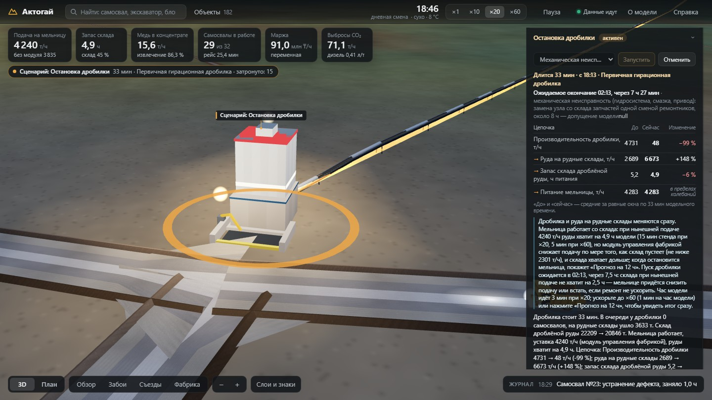
Остановка дробилки, механическая неисправность, 33 мин модели: склад 5,2 → 4,9 ч; ремонт кончится через 7,5 ч — склада не хватит на 2,5 ч, если ремонт не ускорить.
Как увидеть на стенде: правая стопка → «Сценарии «что если»» → строка «Остановка дробилки» → выбрать причину → «Запустить». Отмена — «Отменить» в той же карточке.
Модель рудника
4
182 двойника: каждый объект участка — вещь в Eclipse Ditto
Двойник имеет тип, родителя, постоянные связи и признаки с единицами; связи, которые меняются (куда едет самосвал, что копает экскаватор), — тоже признаки.
Карточка самосвала: признаки с графиками из InfluxDB; связи — ссылки на другие двойники.
Как увидеть на стенде: щелчок по самосвалу на сцене, поиск «Самосвал №5» или кнопка «Объекты» в верхней строке; адрес http://localhost:8088/#/twin/truck-05; JSON — /ditto/api/2/things/kz.aktogay:truck-05.
Достоверность
5
Модель настроена на открытые цифры Актогая и сходится с ними
Калибровка — без модулей: 7 суток модели (mine/tests/test_soak.py), пересчёт на год, против отчёта KAZ Minerals за 2025 год. С четырьмя модулями — готовность 93,3 %, переработка на 8 % выше линии, 114,5 тыс. т меди в год. Скорость и расход самосвала следуют из мощности, массы и уклона.
Показатель
Модель без модулей
Актогай
Источник
Руда линии №1 за год
30,91 млн т
30,909 млн т
KAZ 2025, с. 3
Медь в концентрате линии за год
111,8 тыс. т
109,7 тыс. т
KAZ 2025, доля линии
Содержание меди в питании
0,42 %
0,41 %
KAZ 2025
Извлечение
87,0 %
87,2 %
KAZ 2025
Коэффициент вскрыши
0,35 т/т
0,363 т/т
KAZ 2024, расчёт
Расход дизеля самосвала
121 л/ч
89–127 л/ч
паспорт 785C, статья
Готовность самосвалов
87,2 %
85 %
расчёт парка; лучшие 92–94 %
Баланс горной массы и меди
0,0000 т
—
замыкается за 7 суток
59 / 16
параметров из прочитанных источников / по выдержке
41
расчёт из других строк
231
допущение с обоснованием
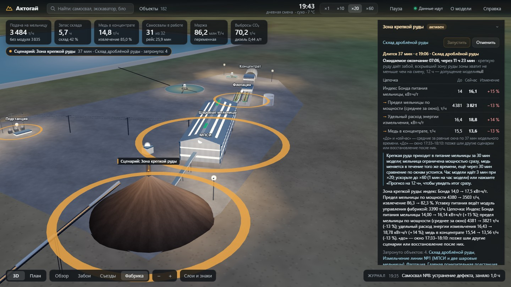
Закон Бонда на стенде, «Зона крепкой руды», 37 мин: индекс 14 → 16,1 кВт·ч/т — предел мельницы по мощности 72 МВт 4 381 → 3 821 т/ч, удельная энергия 16,4 → 18,8 кВт·ч/т, медь 15,5 → 13,6 т/ч; модуль фабрики снижает уставку.
Гружёный 785C на съезде 10 %: 1 005 кВт × 0,8 / (238 т × g × 12,5 %) = 9,9 км/ч.
Склад: Δзапас = дробилка − мельница; медь = питание × содержание × извлечение.
Как увидеть на стенде: «О модели» — таблица реальных цифр с источниками; «Сценарии «что если»» → «Зона крепкой руды» → «Запустить», точка обзора «Фабрика»; все 347 чисел — docs/mine/parameters.md.
Визуализация
6
Рудник на весь экран: всё, что видно, приходит из двойников
Геометрия — из атрибутов geo и spec, состояние — из признаков, связи — из links. Страница открывается на общем виде карьера и фабрики в 3D.
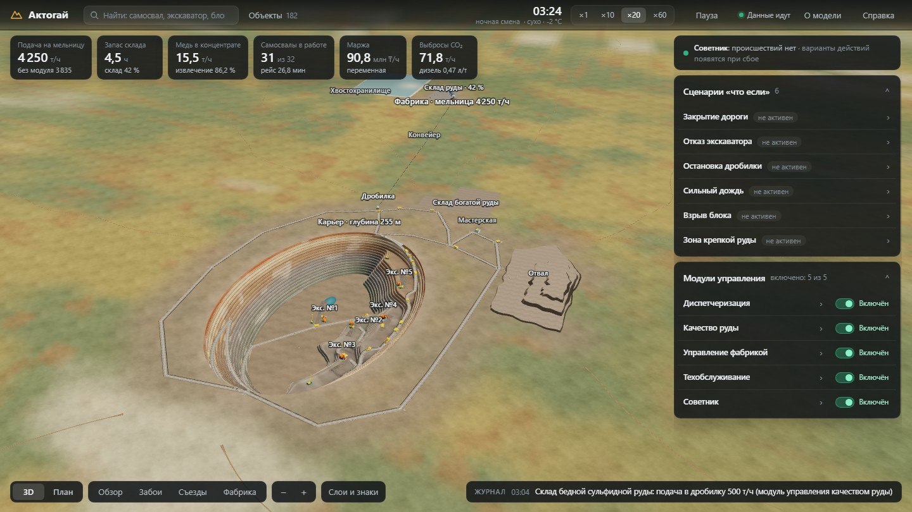
Общий вид при дневном освещении (?time=11:30; часы показывают модельное время): карьер уступами в настоящем масштабе высот, съезды, отвал, рудные склады, конвейер, фабрика; техника там, где она сейчас.
Верхняя строка — поиск, «Объекты», модельное время со сменой и погодой, скорость ×1…×60, «О модели», «Справка».
Шесть плиток — подача на мельницу, запас склада в часах (запас ÷ нынешняя уставка), медь, самосвалы в работе, маржа, CO₂; щелчок — цепочка от забоя до флотации в цифрах и медь, руда, переработка за смену (с 08:00 или 20:00).
Справа — «Советник», «Сценарии «что если»», «Модули управления»: строка раскрывается в карточку.
Слева — список «Объекты» и карточка выбранного объекта.
Внизу — «3D» / «План», точки обзора «Обзор», «Забои», «Съезды», «Фабрика», масштаб, «Слои и знаки», строка журнала.
Как увидеть на стенде: http://localhost:8088 — 3D сразу; ?view=plan — план; #/twin/<имя> — объект; мышь поворачивает, колесо приближает; видеокарта не нужна.
Визуализация
7
Сцена живёт по модели: техника, фабрика, день и ночь, план
Caterpillar 785C, Hitachi EX3600 и Sandvik D55SP в своих размерах; солнце стоит там, где оно над Актогаем в модельное время.
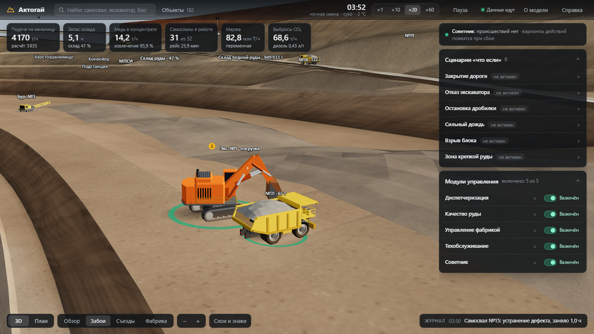
«Забои», день: экскаватор №1 грузит самосвал.
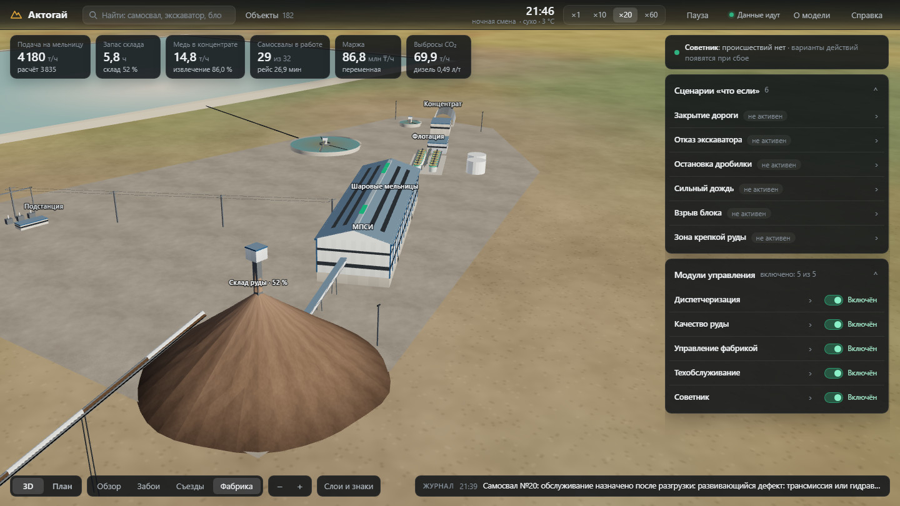
«Фабрика»: склад руды, мельницы, флотация.
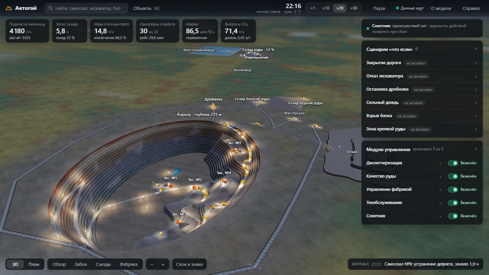
Ночь, 22:16 модели: фары, прожекторы, огни.
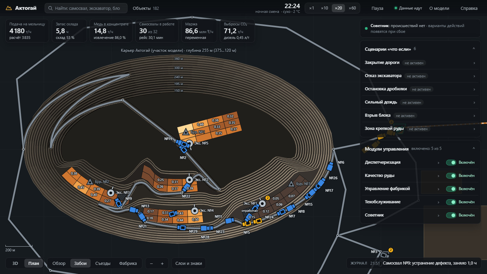
«План», «Содержание Cu»: % Cu в блоках.
Экскаватор поворачивается от забоя к самосвалу, самосвал поднимает кузов на разгрузке, станок поднимает мачту, когда бурит; за самосвалом на сухой дороге — пыль.
Круг под машиной — её состояние; неисправная — красный круг с маячком; жёлтая метка с числом — очередь.
Дождь и снег идут, когда так говорит двойник погоды; закрытая дорога перегорожена, опасная зона взрыва — красный купол с отсчётом; затронутое сценарием подсвечено янтарным.
«Слои и знаки» окрашивают блоки по состоянию, содержанию меди, крепости или назначению — на сцене и на плане.
Как увидеть на стенде: нижняя строка → «Обзор», «Забои», «Съезды», «Фабрика»; «План»; «Слои и знаки» → «Содержание Cu»; ?time=12:00 в адресе — освещение полудня.
Сценарии «что если»
8
Шесть сценариев: последствия идут по связанным двойникам
Сценарий меняет только свою подсистему, дальше всё следует из модели. Карточка показывает четыре звена цепочки «до → сейчас» за равные окна и помечает изменения в пределах обычных колебаний.
Сценарий
Ожидается
Цепочка, которую показывает карточка
Закрытие дороги
6 ч
путь с грузом → время рейса → руда в дробилку → запас склада, ч
Отказ экскаватора
8 ч
выемка → очередь на рейс → руда в дробилку → содержание меди в питании
ограничения скорости → рейс без ожидания → дизель на тонну → руда в дробилку
Взрыв блока
20 + 15 мин
оцепление, закрытые дороги → выемка → время рейса → взорванная масса
Зона крепкой руды
12 ч
индекс Бонда → предел мельницы по мощности → удельная энергия → медь
У каждого сбоя — ожидаемая длительность с обоснованием (у дробилки — по причине: механическая неисправность или заклинивание). На стенде сценарий идёт, пока его не отменят; прогнозы считают, что он кончится в ожидаемое время.
Затронутые двойники подсвечены на сцене янтарным; их список — признак affected. «До» — чистое окно без других сценариев.
Запуск и отмена — живые сообщения Ditto activate / cancel двойнику сценария.
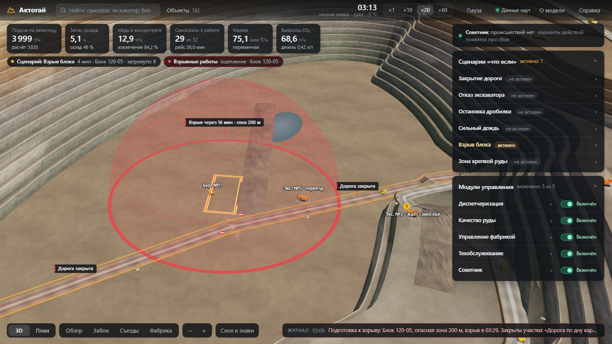
«Взрыв блока», оцепление: над блоком 120-05 купол опасной зоны 200 м и отсчёт «Взрыв через 16 мин», две дороги закрыты, экскаватор №5 выводится, под плитками — «Взрывные работы: оцепление».
Как увидеть на стенде: «Сценарии «что если»» → строка сценария → выбрать объект (недопустимые — под «Сейчас нельзя» с причиной) → «Запустить»; «Отменить» возвращает рудник к обычной работе.
Сценарии «что если»
9
От причины до фабрики: закрытый съезд и ливень в карточках
Оба сценария сняты на стенде 16 октября при скорости ×20; рядом со сценой — карточка с цепочкой «до → сейчас». Над цепочкой карточка пишет ожидаемое окончание сбоя и его обоснование.
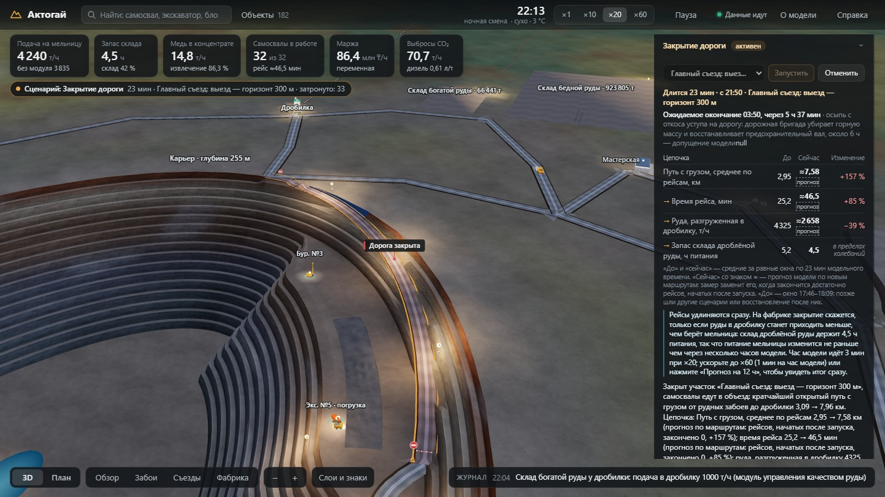
Закрыт «Главный съезд: выезд — горизонт 300 м», 23 мин, ожидаемое окончание через 5 ч 37 мин: въезд перегорожен; пока рейсы по новым маршрутам не закончены, «сейчас» — прогноз со знаком ≈: путь с грузом, среднее по рейсам 2,95 → 7,58 км (+157 %), рейс 25,2 → 46,5 мин, руда в дробилку 4 325 → 2 658 т/ч (−39 %); склад пока в пределах колебаний.
Сильный дождь, 4 мм/ч, 32 мин, ожидаемое окончание через 2 ч 28 мин: на съездах идёт дождь, знак «Ограничение 27 км/ч», западный съезд закрыт; среднее ограничение скорости 35,5 → 27,7 км/ч (−22 %), рейс без ожидания 22,7 → 25,2 мин (+11 %), руда в дробилку 4 343 → 3 595 т/ч — пока в пределах колебаний.
Как увидеть на стенде: «Закрытие дороги» или «Сильный дождь» → «Запустить»; итог на фабрике сразу — «Прогноз на 12 ч» в карточке или «×60» в верхней строке.
Прогноз
10
Две ветки будущего: 12 часов дважды за 11–12 секунд
Симулятор копирует свою модель в текущем состоянии вместе с ядрами включённых модулей и прогоняет копию в двух вариантах. Происшествие в ветке кончается в своё ожидаемое время. Настоящий рудник при этом не меняется.
Ветка А — всё как сейчас; ветка Б — с одним изменением: сценарий запущен или отменён, модуль включён или выключен, вариант советника применён.
Итог с поправкой — первая строка: переменная маржа плюс руда, которую горизонт оставляет, по одной цене везде — медь сверх средней руды (0,41 %) плюс работа парка 897 ₸/т, минус перевалка с рудного склада 208 ₸/т; минус ресурсы смены. Перекладывание руды из кучи в кучу итог не меняет.
Откуда медь: переработано руды, содержание в питании, извлечение; руда со склада, с рудных складов и из забоев.
Общие случайные числа: у каждой машины, блока и дня свой поток; парный разброс — 8 млн ₸ и 0,7 т меди за 12 ч, разница меньше двух стандартных ошибок помечена «в пределах разброса».
Тот же движок: советник (слоты 2–5, по 3 парных повтора), модули (слоты 6–9), проверка стенда (слот 10).
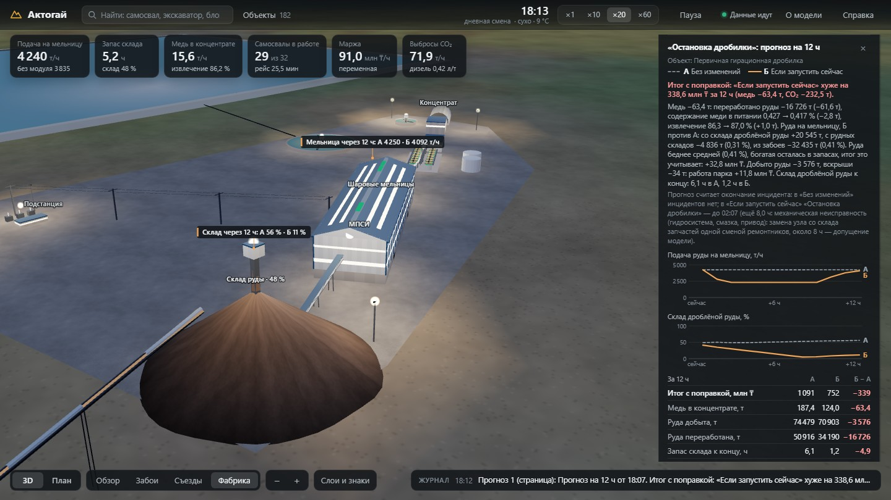
На сцене у склада — его заполнение через 12 ч в обеих ветках.
«Остановка дробилки», механическая неисправность 8 ч, склад 48 %: подача снижается примерно до 2 300 т/ч, медь 187,4 → 124,0 т (−63,4 т), итог с поправкой −338,6 млн ₸ (маржа −377 млн ₸), склад к концу 6,1 → 1,2 ч.
Как увидеть на стенде: раскрыть строку сценария → «Прогноз на 12 ч» (или «Что даёт модуль?» в карточке модуля); панель появится в карточке, подпись «Склад через 12 ч» — на сцене.
Советник
11
Одно происшествие — два ответа: хватит ли склада до конца ремонта
Советник знает, сколько продлится сбой и на сколько хватит склада дроблёной руды. Он строит варианты из ресурсов смены и рычагов модулей, проигрывает каждый на 12 часов в трёх парных повторах и пишет, почему вариант окупается или нет. Решает начальник смены.
Заклинивание дробилки на 3 ч: при складе на 6,4 ч мельница сбоя не заметит — вторая бригада за 1,2 млн ₸ даёт −0,2 ± 4,6 млн ₸, рекомендовано «Ничего не менять». При складе на 2,6 ч та же бригада приносит +76,0 ± 8,7 млн ₸ и 14,1 т меди.
Ресурсы смены и их цена: вторая бригада с подрядчиком (ремонт × 0,6, 1,2–1,3 млн ₸), бригада мастерской в забой (× 0,75, без денег, бокс простаивает), аварийная дорожная бригада (полоса через 2 ч, 0,72 млн ₸), грейдер с подсыпкой (5,4 млн ₸).
Рекомендация — если выигрыш не меньше 2 стандартных ошибок (≥ 9,2 млн ₸) и 3 млн ₸, медь теряется не больше 1 т и выигрыш не держится на запасах. Ранжирование — за 16–19 с.
Стенд, 16.10.2026
Склад
Рекомендация
За 12 ч
Дробилка, 8 ч
56 / 15 %
вторая бригада
+229 / +231 млн ₸
Главный съезд, 6 ч
60 %
«Ничего не менять»
+4,9 ± 4,6
10 %
аварийная дорожная бригада
+63,9 ± 5,6 млн ₸
Ливень, экскаватор
оба уровня
«Ничего не менять»
грейдер −5,4
Склад 59 % (6,4 ч): «Ничего не менять»
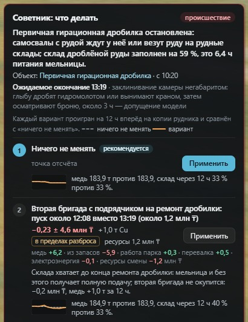
Склад 19 % (2,6 ч): вторая бригада
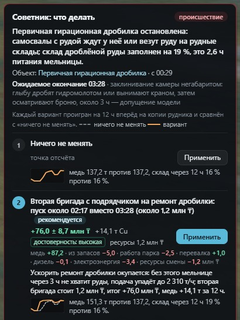
Как увидеть на стенде: «Остановка дробилки» → причина «Заклинивание негабаритом, ≈3 ч» → «Запустить» → через 16–19 с вверху правой стопки «Советник: что делать» → «Применить» у варианта → запись в журнале.
Модули
12
Четыре модуля управления меняют работу рудника, эффект измерен
Модуль — отдельный сервис: видит рудник через события двойников, действует живыми сообщениями Ditto, пишет свой двойник. Эффект — 7 суток модели без модуля и с ним (mine/tests/test_modules.py) и прогноз «с модулем / без» на стенде каждые 3 часа модели.
Модуль
Рычаг
Мера эффекта за 7 суток: без → с модулем
Цена и оговорки
Диспетчеризация
assign самосвалу
вскрыша 324 → 357 тыс. т (+10,2 %); ожидание на рейс 2,95 → 2,87 мин; очередь у дробилки при полном складе 390 → 30 самосвало-мин
ожидание у экскаваторов 1,01 → 2,45 мин
Качество руды
set-destination, set-reclaim
содержание в полосе 0,38–0,44 %: 47,3 → 100 % времени
медь −3,1 %: питание беднее, богатая руда на складе (+64 т Cu)
На стенде, 16.10.2026: медь и итог с поправкой за 12 ч «с модулем / без»
Проверка стенда
Среднее прогнозов
Фабрика
+18,7 т, +107,9 млн ₸
+14,3 т, +84,1 млн ₸
Техобслуживание
+1,2 т, +1,0 млн ₸
+0,1 т, −2,0 млн ₸
Диспетчеризация
−0,8 т, +3,4 млн ₸
−1,0 т, −3,1 млн ₸
Качество руды
−4,3 т, −0,5 млн ₸
−5,9 т, −4,1 млн ₸
У диспетчеризации и качества руды меди меньше, потому что питание беднее: богатая руда остаётся на складах, итог с поправкой это учитывает. Пятый модуль — советник (слайд 11).
«Управление фабрикой»: уставка 4 240 т/ч на потолке модуля 4 249 — 97 % предела мельницы по мощности 4 380 т/ч; эффект — +15,6 т меди, итог +91,8 млн ₸, среднее 3 прогнозов.
Как увидеть на стенде: «Модули управления» → переключатель «Включён» / «Выключен»; щелчок по строке — карточка с решениями и эффектом; «Что даёт модуль?» — прогноз на 12 ч с ним и без него.
Построено на OpenEgiz
13
Все данные идут через платформу: MQTT → Ditto → Telegraf → InfluxDB
Ни один компонент рудника не читает состояние другого в обход Ditto: симулятор получает команды живыми сообщениями, модули видят рудник через двойники, страница — через шлюз к Ditto и InfluxDB.
mine-simсимулятор и прогноз; единственный писатель физических двойников
Mosquittotelemetry/<имя> opentwins/twin/events/…
Eclipse Ditto182 вещи, поиск, поток событий, живые сообщения
5 модулейсобытия двойников по MQTT; решения — HTTP …/inbox/messages/…
mine-ui (nginx)страница :8088; шлюз только для чтения и разрешённых сообщений
Grafana«Актогай — история», без входа
Браузер3D-сцена, план, плитки, карточки
сервисы рудникаплатформа OpenEgizстраницастрелки — куда идут данные; пунктир — решения модулей
# двойник через шлюз страницы, без пароля
curl localhost:8088/ditto/api/2/things/kz.aktogay:truck-05
# телеметрия и события в MQTT (localhost:1883)
mosquitto_sub -t 'telemetry/truck-05'
mosquitto_sub -t 'opentwins/twin/events/kz.aktogay/truck-05'
# история в InfluxDB: поле value_<признак>_properties_value
curl 'localhost:8088/influx/query?thing=kz.aktogay:truck-05&range=5m'
Сообщение телеметрии — команда протокола Ditto things/twin/commands/modify с полным набором признаков.
Модуль выключен или упал — его решения истекают через 30 мин модели, рудник возвращается к базовым правилам.
Как увидеть на стенде: команды справа на машине со стендом; приложение OpenEgiz в Grafana платформы — http://localhost:3000, вход по README.
Запуск, проверка, ограничения
14
Две команды — и рудник работает; пять минут — и видно всё
Ubuntu 24.04 с Docker Engine и Compose v2. Первый запуск скачивает около 6 ГБ образов и занимает 7–15 минут; повторный при скачанных образах — 83 с.
sudo apt-get update && sudo apt-get install -y make curl
make mine
# … Aktogay mine slice is running: http://localhost:8088
Адрес или команда
Что там
http://localhost:8088
рудник в 3D, плитки, объекты, сценарии, модули, советник, журнал
?view=plan · ?time=12:00
сразу план · освещение полудня
http://localhost:3000/d/aktogay-history
Grafana «Актогай — история», без входа
make mine-check
сквозная проверка стенда, около 3 мин
make mine-test
194 теста модели, модулей, ресурсов смены, прогноза и советника (11 мин)
0:00 общий вид и плитки; щелчок по самосвалу — карточка и маршрут
1:30 «Остановка дробилки» → причина → «Запустить» → «Советник: что делать» → «Применить»
3:00 «Прогноз на 12 ч»; «Что даёт модуль?»; «Отменить»; журнал → «История в Grafana ↗»
Ограничения
Участок: одна сульфидная линия и её забои; вторая линия, окисленная руда (SX-EW), молибден, вода и сгущение не моделируются.
Геометрия карьера, расстановка объектов и длины дорог условны — KAZ Minerals их не публикует; оборудование — проект 2014 года.
231 из 347 параметров — допущения с обоснованием: бортовое содержание, индекс Бонда, вместимость склада, отказы, длительности ремонтов, цены ресурсов смены.
Людей, вентиляции, водоотлива и геотехники бортов нет; опасная зона взрыва — по российским правилам. Маржа переменная, цены — октябрь 2026 г.
Эффект на фабрике виден через часы модели; выводы о разнице меньше двух стандартных ошибок прогноза не делаются.
Что дальше
Вторая линия и общие забои; сгущение, вода и хвостовое хозяйство как двойники; персонал и допуски в зоны.
Калибровка по данным диспетчерской системы, если оператор их предоставит; советник с несколькими действиями и горизонтом в две смены.
Подробно: «Справка» и «О модели» на странице; SUBMISSION.md, docs/mine/parameters.md (все числа с источниками), docs/mine/ARCHITECTURE.md (устройство и контракты сообщений).